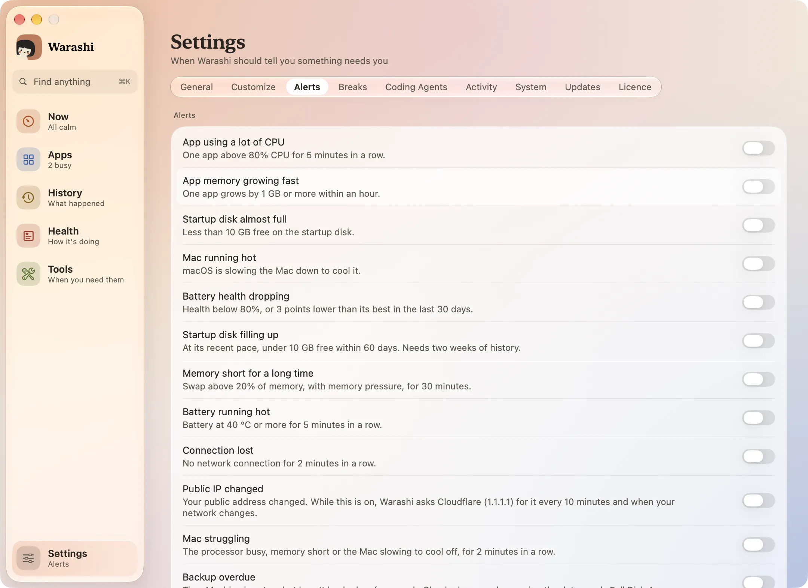

Gli avvisi ti dicono quando qualcosa ha bisogno di te: una volta per problema, non ogni minuto in cui dura.
- Apri Impostazioni › Avvisi
Premi ⌘, e scegli Avvisi.


- Attiva gli avvisi che vuoi
Ogni interruttore è una regola (vedi la tabella sotto). CPU fuori controllo, crescita della memoria, uso intenso della memoria e calore sono attivi fin dall'inizio; il resto è disattivato finché non lo attivi. Ogni problema viene segnalato una volta, e di nuovo solo dopo che è rientrato e sono passate un'ora.
- Consenti le notifiche
La prima volta, macOS chiede se Warashi può inviare notifiche. Clicca Consenti. Se hai detto di no, gli avvisi compaiono comunque in Warashi e nella tacca, e Impostazioni offre Apri Impostazioni Notifiche.
- Leggi e silenzia gli avvisi
Scegli Cronologia, poi la scheda Avvisi, per gli ultimi 30 giorni con le prove. Fai clic su Silenzia per fermare un avviso per quella specifica app.


Gli avvisi
| Avviso | Quando |
|---|---|
| App che usa molta CPU | Un'app sopra l'80% di CPU per 5 minuti di fila. |
| Memoria di un'app in rapida crescita | Un'app cresce di 1 GB o più in un'ora. |
| Disco di avvio quasi pieno | Meno di 10 GB liberi sul disco di avvio. |
| Disco di avvio che si sta riempiendo | Al ritmo recente, meno di 10 GB liberi entro 60 giorni. Servono due settimane di cronologia. |
| Memoria scarsa per molto tempo | Swap oltre il 20% della memoria, con pressione della memoria, per 30 minuti. |
| Mac che scalda troppo | macOS sta rallentando il Mac per raffreddarlo. |
| Batteria che scalda troppo | La batteria a 40 °C o più per 5 minuti di fila. |
| Salute della batteria in calo | Salute sotto l'80%, o 3 punti sotto il suo massimo degli ultimi 30 giorni. |
| Connessione persa | Nessuna rete per 2 minuti di fila. |
| IP pubblico cambiato | Il tuo indirizzo IP pubblico è cambiato, per esempio perché una VPN è caduta. |
| VPN disconnessa | Una VPN che trasportava il tuo traffico si è fermata per 20 secondi. Letto dallo stato di rete di macOS, senza alcuna chiamata di rete. Una VPN che trasporta solo parte del traffico (split tunnel) non viene rilevata. |
| Una compilazione potrebbe essere bloccata | Un compilatore (Swift, Clang, Rust e altri) a un core pieno per 10 minuti senza finire: il segno di una compilazione bloccata su un file, non di una compilazione lunga. L'avviso nomina il compilatore, il suo progetto e l'agente di programmazione che lo ha avviato, e la sua notifica ha Chiudi compilatore. |
| Cestino che si riempie | Il Cestino contiene più della dimensione che scegli (1, 2, 5 o 10 GB; 2 GB all'inizio). Invece di una notifica, dalla tacca arriva una scheda (o, senza tacca, scende dalla voce di Warashi nella barra dei menu) con la dimensione del Cestino: Svuota il Cestino… chiede una volta, poi elimina tutto per sempre; Ignora la tiene zitta finché il Cestino non cresce di nuovo di quella dimensione, o per una settimana. Richiede Accesso completo al disco, perché macOS protegge il Cestino. |
| Uso intenso della memoria | macOS ha poca memoria (pressione della memoria critica, o alta per 2 minuti) e un'app che puoi chiudere usa un decimo della memoria o più. Conta la pressione, non quanto sembra piena la barra della memoria: una memoria piena di cache è sana. Dalla tacca arriva una scheda (o, senza tacca, scende dalla voce di Warashi nella barra dei menu) con fino a tre di queste app e le loro dimensioni (in rosso da un quinto della memoria in su). Esci usa l'uscita normale dell'app, quindi chiede del lavoro non salvato; se è ancora aperta dopo 5 secondi offre Uscita forzata. Esci da tutte fa lo stesso per ognuna. Ignora apre un menu (nella tacca la ignora semplicemente per ora): Ignora per ora la tiene in silenzio finché la pressione non è normale da 10 minuti, e mai entro l'ora. Il menu ha anche Non mostrare per un'app e Disattiva questo avviso. I processi di macOS e Warashi non vengono mai proposti. |
| Mac in difficoltà | Il processore occupato, la memoria scarsa o il Mac che rallenta per raffreddarsi, per 2 minuti di fila. Dice il perché, come il Diario di bordo. |
| Backup in ritardo | Time Machine è configurato ma non fa un backup da una settimana. Controllato una volta al giorno; per vedere la data serve Accesso completo al disco. |
| Aggiornamento di macOS in attesa | Un aggiornamento di macOS è in attesa da una settimana. Controllato una volta al giorno. |
L'avviso IP pubblico
Solo finché questo avviso è attivo, Warashi chiede a 1.1.1.1 di Cloudflare il tuo indirizzo IPv4 pubblico ogni 10 minuti e poco dopo che la rete cambia. La richiesta non contiene nulla su di te o sul tuo Mac. Se l'indirizzo cambia, ti viene detto il nuovo, con un promemoria di controllare la VPN. Disattiva l'avviso e Warashi smette di chiedere e dimentica l'indirizzo.
Se qualcosa non va
- Nessuna notifica: controlla Impostazioni di Sistema › Notifiche › Warashi. Warashi mostra una nota in Impostazioni › Avvisi quando sono disattivate.
Altro in Risoluzione dei problemi, oppure scrivi a adam@warashi.app.